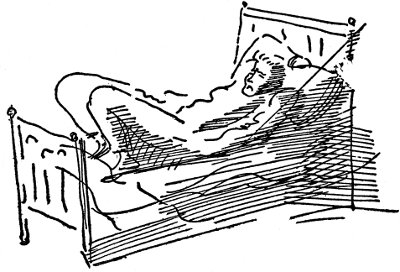
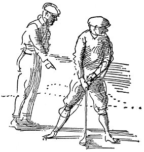
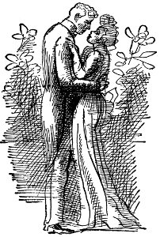
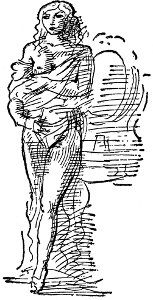
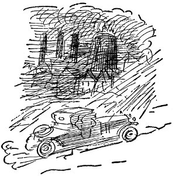
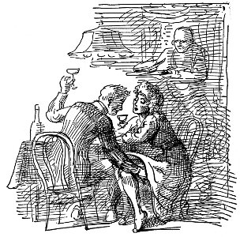
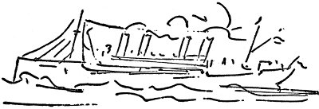

bombardıer avustralyalı'yı durdurdu
albay Demokratların ulusa sıkıntı getirdiklerini söyledi Huerta boyun eğmez bir terslikle öldüğümde görevimden ayrılacağım ve Meksika'nın yarısı da benimle ölecek diye söylendi hiç alev görünmedi ama kraterden çıkan koca kara buhar hortumu gökyüzünde bir mil yükseldi volkanik küller on üç mil uzaklıktaki Macomber Ovaları'na döküldü
Adamlar karışıklık mı çıkardı? Artık Poker Fişi Yok.
Aşağılarda rıhtımda
Bizim eski Alabama'da
Anacığın var, babacığın var
Şu bizim Ephram'la Sammy de var
peri kızları ravinia çayırlarında dans etti
wılson iş çevrelerinin görüşünü alacak
bombayı attığını kabullendi kadın polis arkadan içki ısmarladı buğdaya para yatıranlar yitirdi hırsız diye öldürüldü
Mehtaplı bir gecede
Bulabilirsin hepsini
Beklerken
Banjolar çalınırken
Nedir bu hepsinin anlattığı
Nedir bu hepsinin söylediği şarkı
James'in el yazısını tanıyan başkan havai fişeği aldı ve kapsülü çekip çıkardı. Yığınla altın sarısı şekerleme döküldü masaya; sonra kâğıda bakarak Yürütme Kurulu Başkanı şunları okudu: “Bunlardan çok yeme, çünkü annen yersen hasta olacağını söylüyor.”
meksika sularında gözcülüğü sürdürüyorlar
Yanıtlıyorlar bir ağızdan
Dönerek sallanarak
İşte güzelim gemi Robert E. Lee
Geliyor pamuğumuzu almaya uzaklardan
ısadora duncan'ın yeni mutluluğu
Sürekli sorun yaratan Dünya Sanayi İşçileri üyeleri bu akşamüstü Rosebank Staten Adası'nda Garibaldi'nin doğum gününü kutlama eğlencelerini bastılar, İtalyan bayrağına sövdüler, İtalyan Silahlanma Derneği üyelerini copladılar, yerlerde sürüklediler ve Amerikan bayrağını da çöplüğe atacaklardı eğer
mayolarıyla yarı çıplak denize giren altı kız kötü adamın gözünü morarttı
Kızılderili dalgıçlar boğulan delikanlının cesedini arıyor. Görgü tanıklarından kimileri kalabalıkta bir kadın gördüklerini söylüyorlar. Kadına bir tuğlayla vuruldu. Griler giymiş adam ateş etmek için onun eteklerinin arasına saklandı. Üst güverteler ve geminin ıssız yerleri, annelerinin gemiye tek başlarına binmelerine izin vermediği sarhoş genç kızlarla delikanlıların seviştiği tam bir sevgililer cenneti olmuştur.
ortabatı oyları wılson'ın yazgısını belirleyecek
işçiler arasındaki tedirginliğin nedenlerini
anlattı
“Ben, Amerika'ya çıkan İsviçreli bir amiralim,” ve polis taksi çağırdı
Görün onları ayaklarını sürürken
Duyun onların ezgisini şarkı söylerken
Düpedüz uludur, dostum
Rıhtımda beklerken
Beklerken
Robert
E.
Lee'yi.
Karayipler İmparatoru
Minör C. Keith öldüğünde tüm gazetelerde resimleri çıktı, gaga burunlu, parlak gözlü, saygıdeğer göbeği, gözlerinin altında tedirgin bir anlatım bulunan bir adamdı.
Minör C. Keith varlıklı birinin oğluydu, para kokusunu seven bir ailede doğdu, o ailenin bireyleri dünyanın öbür ucundan para kokusunu alırlardı.
Dayısı Henry Meiggs'ti, Batı Kıyısı'nda Don Enrique diye bilinirdi. Babasının büyük bir kereste işi vardı, Brooklyn'de emlakçılıkla uğraşırdı:
Küçük Keith hınk demiş babasının burnundan düşmüştü.
Eskiden kırk dokuzlarda altına hücum sırasında San Francisco'ya gelmişti. Don Enrique bir şeyler umarak dağlara çıkmadı, Ölüm Vadisi'nde alkali tozlarını elerken susuzluktan ölmedi. Ötekilere giysi, araç gereç sattı. San Francisco'da kaldı, politikaya oynadı, büyük paralı işlere oynadı boğazına dek batıncaya, apar topar gemiye binip yurtdışına kaçmak zorunda kalıncaya dek.
Bindiği gemi onu Şili'ye götürdü. Şili'de para kokusu alabiliyordu.
Orada kapitalist yanki'ydi.[10] Santiago'dan Valparaiso'ya demiryolu döşeyecekti. Chincha Adaları'nda deniz kuşu gübresi yığınları vardı. Deniz kuşu gübresinde para kokusu alıyordu Meiggs. Kuş gübrelerinden servet yaptı. Batı Kıyısı'nda en güçlü kişi oldu, bir sürü dolap çevirdi fiyatlar üzerinde, demiryolları üzerinde, orduda, yerel şeflerin politikalarında. Her şey, koskoca poker oyunundaki fişlerdi. Koskoca bir elin ardına tepeleme dolar yığdı.
İnanılmaz büyüklükteki And Demiryolları'na sermaye koydu.
Tomas Guardia, Kosta Rika diktatörü olduğunda Don Enrique'ye mektup yazarak, kendisi için de demiryolu yapmasını istedi.
Meiggs'in, And Dağları'nda işleri vardı, hem 75.000 dolarlık anlaşma için yitirecek zamanı da yoktu, bu yüzden de yeğeni Minör Keith'i gönderdi.
O ailede hiç kimse bir saniyesini boşa geçirmezdi.
Minör Keith, on altı yaşında kendi işini kurmuştu, bir giyim mağazasında yakalıklar, boyunbağları satıyordu.
Ondan sonra kereste ölçümü yaptı, kereste alıp sattı.
Babası, Texas'ta Corpus Christi açıklarındaki Padre Adası'nı satın alınca, Minör Keith'i ondan para çıkarsın diye yolladı.
Minör Keith, orada sığır yetiştirmeye, büyük ağlarla balıkçılığa başladı,
ama balıkla sığır yeterince hızla para getirmiyordu
bu yüzden de domuz satın aldı, öküzleri doğradı, etini kaynattı, domuzlara yedirdi, balıkları doğradı domuzlara yedirdi,
ama domuzlar da yeterince hızla para getirmiyordu
böylece de Limon'a gideceğine sevindi.
Limon, Karayipler'deki en kötü hastalık yuvalarından biriydi, orada yerliler bile sıtmadan, sarıhummadan, dizanteriden ölüyordu.
Minör Keith, demiryolu yapımında çalıştıracak işçi tutmak için buharlı John G. Meiggs gemisiyle New Orleans'a gitti. Günde bir dolar artı yemek önerdi, yedi yüz işçi buldu. Kimi William Walker'ın haydutluk yaptığı günlerde bulunmuştu oralarda.
Bu adamlardan aşağı yukarı yirmi beşi sağ kalabildi.
Ötekiler viskiyle haşlanmış leşlerini çürüsün diye bataklıklarda bıraktılar.
Bir başka gemiyle bin beş yüz kişi daha getirdi, onların hepsi öldü, Limon'da yalnızca Jamaika zencilerinin yaşayabileceğini kanıtlamak için.
Minör Keith ölmedi.
1882'de yapımı bitmiş yirmi mil demiryolu vardı, Keith bir milyon dolar içeri girmişti;
demiryolunda taşınacak hiçbir şey yoktu.
Demiryolunun taşıyacağı bir şeyler olsun diye Keith yerlilere muz ektirdi, muzları pazarlamak için de gemiciliğe başlamalıydı;
işte bu Karayipler meyve ticaretinin başlangıcı oldu.
Bu arada da işçiler, viskiden, sıtmadan, sarıhummadan, dizanteriden ölüp duruyordu.
Minör Keith'in üç erkek kardeşi öldü.
Minör Keith ölmedi.
Demiryolları yaptı, perakendeci dükkânları açtı, tüm kıyı boyunca Bluefields'te, Belize'de, Limon'da, kauçuk alıp sattı, vanilya, kaplumbağa kabuğu, saparna alıp sattı, ucuza alabileceği ne bulduysa aldı, pahalı satabileceği ne bulursa sattı.
1898'de Boston Meyve Şirketi'yle birleşerek o gün bu gündür yeryüzündeki en güçlü sanayi birimi olan Birleşik Meyva Şirketi'ni kurdu.
1912'de Orta Amerika Uluslararası Demiryolları'yla şirketini birleştirdi;
tüm bunları muzla yapmıştı;
Avrupa'da, Birleşik Devletler'de herkes muz yemeye başlamıştı,
bu yüzden de Orta Amerika'daki tüm el değmemiş ormanları muz ekmek için kestiler,
muzu taşımak için demiryolları yaptılar,
her yıl Büyük Beyaz Donanma'nın daha çok sayıdaki buharlı gemisi
kuzeye yöneldi tepeleme muz dolu,
İşte budur Karayipler'deki Amerikan imparatorluğunun tarihi
ve Panama Kanalı'ndaki, gelecekte Nikaragua Kanalı'ndaki, denizaltılardaki, savaş gemilerindeki, süngülerdeki.
Niçin o tedirgin anlatım vardı gözlerinin altında, meyve ticaretinin öncüsü, demiryolu yapımcısı Minör Keith'in resimlerinde, öldüğünde gazetelerin bastığı bütün o resimlerinde?
Sine-göz (20)
tramvay işçileri Lawrence'ta destekleme grevine gittiklerinde neydi yani o kahrolası herifler bir sürü İtalyan işte sonunda Macar pis Macar boynunu yıkamayan sarmısak yiyen çocukları avaz avaz bağıran şişko yağlı karılarıyla kahrolası İspanyollar İtalyanlar ve bir duyuru astılar iyi temiz gençlerin gönüllü olması için
tramvayları işletmesi yabancı kışkırtıcılara buranın beyaz adamlar ülkesi olduğunu göstermesi için
işte şu herif Matthews'da yaşardı hep de vatman olmak isterdi Mr. Vali'nin Albany'de vatman olduğu içki içtiği sokaklarda orospularla görüldüğü söylenirdi
işte şu herif Matthews'da yaşardı oda arkadaşıyla Lawrence'a gitti Lawrence'ta çalışmak istedi herkes bağırdı onlara Grev bozucu Pis Grev Kırıcı ama onlar Macar'dı olmayanlar sefil heriflerdi ayaktakımından bu herifle oda arkadaşı birbirlerini çok severlerdi sahanlıkta ayağa kalktı parlak pirinç kolu çevirdi zili çaldı
tramvay deposundaydılar oda arkadaşı vagon tamponlarının arasında bir şeyle oynuyordu bu herif parlak pirinç kolu çevirdi tramvay gitmeye başladı oda arkadaşını ezdi tamponların arasında işte böyle suyu çıktı kafasının öldürdü onu işte böyle tam burda depoda ve şimdi de herif oda arkadaşının anası ve babasıyla yüzleşmek zorunda
J. Ward Moorehouse
Ward Moorehouse, Pittsburgh'da Times Dispatch gazetesinde muhabir oldu, İtalyan düğünlerini, Elk'lerin yerel kongrelerini, karanlık ölümleri, Litvanyalılar, Arnavutlar, Hırvatlar, Polonyalılar arasındaki cinayetleri, intiharları, Yunan lokanta işletmecilerinin yurttaşlığa alınma konusunda karşılaştıkları zorlukları, “İtalya'nın Evlatları” derneğinin verdiği akşam yemeklerini yazarak altı ayını geçirdi. Highland Caddesi'nin sonunda, delidolu, yağlı, Belfast'lı bir kadın olan Mrs. Cook'un büyük, kırmızı ahşap evinde kalıyordu. Mrs. Cook, Homestead fabrikalarında ustabaşı olan kocası, üzerine vinçten ham demir yığını düşüp ölünce, evini kiraya vermek zorunda kalmıştı. Ward'a kahvaltı, pazar günleri de yemek verir, havasız, tıka basa eşya dolu yemek odasında tek başına yemeğini yerken tepesine dikilir, ona Kuzey İrlanda'da geçen gençliğini, Katoliklerin düzenbazlığını, rahmetli kocasının erdemlerini anlatırdı.
Ward için çok kötü günlerdi bunlar. Pittsburgh'da hiç arkadaşı yoktu, soğuk, pis, sulu kar yağan kış boyunca sürekli nezle oldu, boğazı ağrıdı. Gazete yönetim yerinden, yokuşlardan, karanlık gökyüzünden, aşağı yukarı koşuşturup durduğu, tehlikeli tahta merdivenlerden, kocası Locust Sokağı'nda bir bardaki kavgada öldürülmüş bir Mrs. Piretti'yi, Ukrayna Şarkıcılar Derneği'nin başkanlığına seçilmiş bir Mr. Sam Burkovich'i, bir soysuzun çocuğunu doğradığı elleri sabun köpüğü içinde bir kadını arayıp durarak dolaştığı yıkık dökük evlerdeki yoksulluk, lahana, çocuk, çamaşır kokusundan nefret ediyordu. Hiçbir zaman evine sabaha karşı üçten, dörtten önce varamıyordu, öğle saatlerinde kahvaltı ederken yeni görevler için işyerini aramadan önce kendisine ayıracak birkaç dakikası hiçbir zaman olmuyordu. Pittsburgh'a ilk geldiğinde Jarvis Oppenheimer'le birlikte Paris'te görmüş olduğu Mr. McGill'i aramıştı. Mr. McGill onu hatırlamış, adresini yazmıştı, kendisiyle ilişkisini sürdürmesini, çünkü Ticaret Odası'nın örgütlediği yeni bilgi alma bürosunda ona iş bulabileceğini umduğunu söylemişti. Haftalar geçti, ama Mr. McGill'den tek haber gelmedi. Arada bir Annabelle Marie'den yasal işlemler konusunda kuru birkaç satır alıyordu, kendisine bakmadığını, bırakıp gittiğini, kaba davrandığını ileri sürerek Ward'ı boşayacaktı. Yapacağı tek şey gazeteciler peşine düştüklerinde Philadelphia'ya gitmeye yanaşmamasıydı. Mavi kâğıttan yükselen parfüm kokusu, kadınlara karşı kinle karışık belirsiz bir istek uyandırıyordu içinde. Oysa kendini tertemiz saklaması, işine vermesi gerekliydi.

En kötüsü de haftalık izin günüydü. Genellikle sere serpe yatağına uzanmış, sokakların siyah çamuruna çıkamayacak kadar canı sıkkın olarak günü geçirirdi. Mektupla eğitim veren gazetecilik, reklamcılık kurslarına, hatta her şeyi bir yana bırakıp Batı'ya gitmek, bir meyve bahçesinde ya da benzeri yerde iş bulmak için duyduğu itkiyle meyve ağacı bakımı kurslarına bile başvurdu, ama bu kursları izleyemeyecek kadar ne yapacağını bilemez durumdaydı, küçük kitapçıklar, odasında, masasının üzerinde birikiyordu haftadan haftaya. Yaptığı hiçbir şey onu bir yere vardıracak gibi görünmüyordu gözüne. Ocean City'ye gitmek için trenle Wilmington'dan ayrıldığı günden başlayarak tüm yaşadıklarını defalarca kafasından geçiriyordu. Bir yerlerde yanlış yapmış olmalıydı, ama nerede olduğunu bulamıyordu. Tek başına iskambil kâğıtlarıyla oynanan bir oyuna başladı, ama buna bile kafasını veremiyordu. Kâğıtları unutuyor, üzerinde zencefilli çörek rengi kadifeden örtüsü olan masanın başında oturuyor, bakışlarını tozlu, yapay eğreltiotlarının durduğu vazonun krepon kâğıdıyla süslü yüzeyinde, şeker kutusunun tepesinden çıkmış tozlu, pembe fiyonkta dolaştırıyor, tramvayların dönemeçleri sürekli bir gıcırtıyla aldıkları büyük caddeye, öğle sonrası ortalarının karanlık kasveti içinde, hendeklerdeki kara buzun üstünde donuk donuk parlayarak yanmaya başlayan ark lambalarının bulunduğu caddeye kaydırıyordu. Sık sık Wilmington'daki eski günlerini, Marie O'Higgins'i, piyano derslerini, Delaware boyunca küçük bir yelkenlide balık avladığı çocukluk günlerini düşünüyordu; öylesine sinirleniyordu ki hemen dışarı çıkmak zorunluluğu duyuyordu, sonra gidiyor, alt köşedeki gazozcuda sıcak kakao içiyor, kent merkezine iniyor, ucuz bir sinemaya ya da vodvil gösterisine giriyordu. Günde üç tane ucuz puro içiyordu; her yemekten sonra bir tane. Böylece de belli belirsiz bekleyeceği bir şeyleri oluyordu.
Bir iki kere Frick Binaları'ndaki işyerinde Mr. McGill'i görmeye gitti. Her keresinde, adam iş yolculuğunda oluyordu. Beklerken masasında oturan kızla biraz çene çalar, sonra gitmek zorunda kaldığından ötürü duyduğu tedirginliği örtmek için, “Ah, evet, yolculuğa çıkacağını söylemişti,” ya da “Buluşacağımızı unutmuş olmalı,” diyerek isteksizce uzaklaşırdı oradan. Kollarında aslan başları bulunan, büyük, pırıl pırıl, maun koltukları, aslan pençelerinden ayakları olan masalarıyla ışıl ışıl aydınlatılmış bekleme odasından, ayrı bölmelerden gelen daktilo tıkırtılarından, çalan telefon zillerinden, içeri dışarı telaşla koşuşturan iyi giyimli görevlilerden, yöneticilerden ayrılacağında içi kinle dolardı. Gazete yönetim yeri tangırdayan baskı makinelerinin gürültüsüyle doluydu, matbaa mürekkebi, nemli kâğıt tomarları, yeşil siperlikleriyle koşuşup duran işçi çocukların teri ekşi ekşi kokardı. Hiçbir zaman gerçekten seçkin kişilerle birlikte olamamak, işçilerle, yabancılarla, suçlularla ilgisi olmayan bir işi hiçbir zaman bulamamak; nefret ediyordu bundan.
Bir ilkbahar günü, konuk bir gezgin konuşmacıyla görüşme yapmak için Schenley'e gitti. Kent haberleri sorumlusuna yaltaklanarak yazının başına adını koydurmayı umduğu için de neşesi yerindeydi. Uluslararası İşadamları Örgütü'nün toplantısına gelmiş üyeler yüzünden tıklım tıklım dolu olan otel girişinde yolunu açmaya çalışırken Mr. McGill'le burun buruna geldi.
Onu baştan beri görüyormuş gibi olağan bir sesle, “Hey, merhaba, Moorehouse,” dedi Mr. McGill. “Sana rastladığıma sevindim, işyerindeki aptallar adresini yitirmişler. Bana ayıracak bir dakikan var mı?”
“Evet, aslına bakarsanız Mr. McGill,” dedi Ward, “biriyle buluşacaktım ama bekleyebilir.”
“Söz verdinse hiç kimseyi bekletme,” dedi McGill.
“Şey, bu bir iş buluşması değil,” dedi Ward, çocuksu mavi gözlü gülümsemesiyle McGill'in yüzüne bakarak.
Çalışma odasına girip üzeri kilim kaplı sedire oturdular. Mr. McGill'in açıkladığına göre Homestead Fabrikaları'nın yan ürünlerinden önemli bir bölümünü kullanan Bessemer Madeni Mobilya ve Ürünler Şirketi'ni yeniden örgütlemek için geçici genel yöneticiliğe getirilmişti. Reklam ve tanıtma işlerini yönetecek tutkulu, enerjik birini arıyordu.
“Paris'te bana göstermiş olduğun o kitapçığı hatırlıyorum Moorehouse, sanırım aradığım adam sensin.”
Ward gözlerini yere çevirdi. “Elbette, bunun anlamı şimdiki işimi bırakmamdır.”
“Nedir işin?”
“Gazetecilik.”
“Bırak şunu, o işte gelecek yok . . . Şimdi sana açıklayamayacağım birtakım nedenlerden ötürü görünüşte başka birini reklam yöneticisi yapmak zorundayız . . . ama gerçek yönetici sen olacaksın. Ne para almayı düşünürsün?”
Ward, Mr. McGill'in gözlerinin içine baktı, kendi sesinin gelişigüzel biçimde, “Haftada yüz dolar nasıl?” dediğini duyunca kulaklarında kanı dondu sanki.
Mr. McGill usulca bıyığına vurdu, gülümsedi. “Peki, bunu daha sonra görüşürüz,” dedi ayağa kalkarken. “Sanırım, sana şimdiki işinden ayrılmanı ısrarla öğütleyebilirim . . . Bu konuda Mr. Bateman'ı arayacağım . . . seni ondan niçin ayırdığımızı anlasın diye . . . Kırgınlık olsun istemiyorum, anlıyorsun değil mi, birden işten ayrıldığın için . . . Hiçbir zaman kırgınlık istemem . . . Yarın saat onda gelip beni gör. Frick Binaları'ndaki işyerini biliyorsun değil mi?”
“Reklamcılık üzerine çok değerli düşüncelerim olduğunu sanıyorum Mr. McGill. En çok ilgimi çeken iş bu,” dedi Ward.
Mr. McGill artık ona bakmıyordu. Başını sallayarak uzaklaştı. Daha şimdiden aşırı bir başarı havasına girme korkusuyla gidip görüşmesini yaptı.
Ertesi gün gazetedeki son günüydü. Kazançları bir düzeye ulaşır ulaşmaz zam yapılacağı sözünü alarak yetmiş beş dolar haftalığı kabul etti, Schenley'de banyolu oda tuttu, Frick Binaları'nda kendine ait odası, Oliver Taylor adında, tüm örgütün gelişmesinde görev alan müdürlerden birinin yeğeni olan delikanlıyla paylaştığı masası oldu. Oliver Taylor birinci sınıf tenis oyuncusuydu, tüm kulüplere üyeydi, yapılacak işleri de seve seve Moorehouse'a bırakıyordu. Moorehouse'ın yurtdışında bulunduğunu, giysilerinin İngiltere'de dikildiğini anlayınca onu Sewickley Country Club'a üye yaptı, işten çıkışta içki içmeye götürdü. Yavaş yavaş Moorehouse kendine çevre ediniyor, uygun bir bekâr olarak kimi yerlere çağrılıyordu. Tanıdıklarından hiç kimsenin gitmeyeceğini umduğu Allegheney'deki küçük golf alanında hoca tutarak golf öğrenmeye başladı. Eli yüzü düzgün bir oyun çıkardığında da kendini sınamak için Sewickley'e gitti.

Bir pazar öğleden sonra Oliver Taylor da onunla birlikte gelerek çelik fabrikalarının, madenlerin, petrol sanayiinin tüm büyük yöneticilerini golf alanında tek tek gösterdi, her biri konusunda Ward'ı güldüren ama aynı zamanda beğeni yoksunluğu olarak da alınabilecek, bayağı sözcükler söyledi. Güneşli bir mayıs öğle sonrasıydı, Ohio boyunca bereketli topraklardan gelen esintide akasya tomurcuklarının kokusunu duyabiliyordu ve içinde, vurulan golf toplarından çıkan keskin ses, kulüp binasının çevresindeki çimlerde pırıl pırıl giysilerin salınışı, hâlâ içinde yüksek fırın dumanlarının belirsiz sıcaklığını taşıyan güneşli esintiyle gelen işadamlarının güvenli konuşmalarından bariton kırıntılar, zor seçilen uzak kahkahalar vardı. Bu insanlarla tanıştırılmaktan duyduğu mutluluğu gizlemesi çok güçtü.
Geri kalan zamanda gözü işten başka şey görmüyordu. Solgun yüzlü, evde kalmış bir kız olan, Pittsburgh işyerlerinde geçirdiği on beş yılın sonunda maden üretimi işinin girdisini çıktısını avucunun içi gibi bilen sekreteri Miss Rodgers'dan aldığı kitapları akşamları otel odasında okuyor, yöneticiler düzeyindeki toplantılarda herkesi bu sanayiin süreçleri, ürünleri konusunda bilgisiyle şaşkınlığa düşürüyordu. Kafası matkaplarla, uzun çekici kancalarla, tokmaklarla, madeni pencere çerçeveleriyle, baltalarla, küçük el baltalarıyla, somun anahtarlarıyla doluydu. Kimi zaman öğle yemeği saatinde birkaç küçük çivi alma bahanesiyle depoya girer, sorumlusuyla konuşurdu. Crowds Junior dergisini, ruhbilim üzerine yığınla kitabı okuyor, kendini madeni eşya tüccarının, Hammacher Schlemmer ya da başka büyük madeni eşya mağazası yöneticisinin yerine koymaya, ne tür yazının ona sesleneceğini bulmaya uğraşıyordu. Sabahları bir yandan banyosu dolarken tıraş olduğu aynanın önünden uzun bir geçit töreni içinde demir ayaklıklar, ızgaralar, fırın gereçleri, tulumbalar, sucuk makineleri, delgiler, çap pergelleri, mengeneler, döküm gereçleri, çekmece tokmakları geçiyor, bunları perakendeciler için nasıl çekici duruma getirebileceğini düşünüp duruyordu. Tıraş olmak için kullandığı bıçak “Gillette” markaydı. Başka marka tıraş bıçağı yerine neden Gillette'le tıraş oluyordu? “Bessemer” iyi bir addı, paranın, güçlü hadde fabrikalarının, uzun lüks arabalardan inen büyük yöneticilerin kokusu vardı onda. Yapılacak şey, madeni eşya alıcısının ilgisini çekmek, ona güçlü, yüce bir şeyin parçası olduğu duygusunu vermektir, diye düşünürdü boyunbağını alırken, kahvaltısını ederken kendi kendine “Bessemer,” derdi. Niçin bizim maden tutaçlarımız başka markadan daha çekici gelsin, diye düşünürdü tramvaya binerken. Tramvayda, kayışlara tutunmuş sarsılan kalabalığın içinde gider, görmeksizin gazetelerin başlıklarına bakarken kafasının içinde zincir baklaları, lengerler, demir çengeller, yumuşak dirsekler, somunlar, zıvanalar, vidalı borular, boru başlıkları dört dönerdi.
Parasını artırmalarını istediğinde artırdılar, haftalığı yüz yirmi beş dolara çıktı.
Kulübün düzenlediği danslı eğlentide çok güzel dans eden sarışın bir kıza rastladı. Adı Gertrude Staple olan bu kız, Horace Staple adında, birçok büyük şirketin yöneticiliğini yapan, Standard Petrol'de önemli pay sahibi olmakla ün salmış birinin kızıydı. Gertrude, Oliver Taylor'la nişanlıydı, ama bir dansın sonunda Ward'la yerlerine otururlarken gizlice açıkladığı gibi birlikte olduklarında kavga etmekten başka şey yaptıkları yoktu. Ward'ın giysileri üzerine çok iyi oturuyor, oradaki erkeklerin çoğundan daha genç görünüyordu. Gertrude, Pittsburgh'daki erkeklerin hiçbir çekiciliği olmadığını söyledi. Ward ona Paris'i anlattı, kız da burada korkunç canı sıkıldığını, Pittsburgh'da yaşamaktansa Alaska'da, Nome'da yaşamayı yeğleyeceğini söyledi. Ward'ın Paris'i görmüş olmasından büyük mutluluk duyuyordu, Ward da ona Tour d'Argent'i, Wagram Otel'i, Ritz Bar'ı anlattı, arabası olmamasının acısı içine çöktü, çünkü evine bırakılma önerisi almak için kızın elinden geleni yaptığını görüyordu. Ama ertesi gün kıza, çiçek ve güldüreceğini düşündüğü Fransızca bir not gönderdi. Ertesi cumartesi öğleden sonra sürücülük dersleri almaya başladı, hangi koşullarla araba edinebileceğini anlamak için de Stutz satış şubelerinden birine uğradı.
Bir gün Oliver Taylor, yüzünde alaylı bir gülümsemeyle işyerine gelerek, “Ward, Gertrude sana kötü tutulmuş. Seni dilinden düşürmüyor, işine bak, benim ona metelik verdiğim yok. Sürekli, baş edemeyeceğim sorunlar çıkarıyor karşıma. Yarım saatte pestile dönüyorum,” dedi.
Ward, biraz kızararak, “Belki de beni tanımadığı için öyle düşünüyor,” dedi.
“Babasının onu milyonerden başkasına vermeye yanaşmaması çok kötü. Ama yine de biraz gönül eğlendirebilirsin.”
“Böyle şeylere ayıracak zamanım yok,” dedi Ward.
“Benim de o işten başkasına ayıracak zamanım yok. Haydi hoşça kal . . . Sen işine bak, nefis bir kızla yemeğe çıkacağım . . . ateşli bir bebek, Kızıl Değirmen'de dans ediyor, birinci sıra soldan üçüncü.” Göz kırptı, Ward'ın sırtına şaplak indirdi, gitti.
Ağaçların arkasında uzanan Staple'ların büyük evine ikinci kez gittiğinde denemek için aldığı kırmızı, Stutz marka küçük bir araba kullanıyordu. Yola çok hızla saptığı için çiçeklikteki birkaç laleyi ezmesine karşın, oldukça iyi sürüyordu arabayı. Gertrude onu kitaplık penceresinden görmüştü, biraz alay etti. Kötü bir sürücü olduğunu, hep de kötü olacağını söyledi Ward. Evin arkasında, elma ağacının altında kız ona çay ve kokteyl sundu, Ward onunla konuştuğu sürece boşanma işini açması gerekip gerekmediğini düşündü. Sonunda Annabelle Marie'yle geçirmiş olduğu mutsuz günleri anlattı. Kız çok anlayışlı davrandı. Doktor Strang'ı tanıyordu. “Ben de seni yalnızca serüven düşkünü sanıyordum . . . Başkanlığa oynayan bir köylü çocuğu olduğunu, anlıyorsun ya işte . . . Öyle bir şey.”
“Ama gerçekten öyleyim,” dedi Ward. İkisi de güldüler, Ward onun kendisine çılgınca âşık olduğunu görebiliyordu.

O gece danslı toplantıda buluştular, limonluğun ucuna yürüdüler, orkidelerin arasında hava nemden yapış yapıştı, kızı öptü, uçuk sarı bir orkideye benzediğini söyledi. Ondan sonra her fırsatta usulca birlikte kaçtılar. Öperken kollarının arasında ansızın bir kendini bırakışı vardı ki kızın Ward, onun sevgisine iyice inanıyordu. Ama böylesi gecelerden sonra eve gittiğinde uyuyamayacak kadar sinirli, gerilmiş oluyor, sevişeceği bir kadına duyduğu özlemle kendine sövüp durarak odada bir aşağı bir yukarı gidip geliyordu. Sık sık soğuk duş alıyor, kendini işine vermesi, böyle şeylerle uğraşmaması, kızların onu böylesine baştan çıkarmalarına göz yummaması gerektiğini söylüyordu kendi kendine. Kentin alt sokakları orospularla doluydu, ama hastalık kapmaktan, şantaj konusu olmaktan korkuyordu. Sonra bir gece, bir toplantının ardından Taylor onu, tam anlamıyla güvenilir olduğunu söylediği eve götürdü. Orada en çok on sekiz yaşlarında, esmer, güzel bir Polonyalı kızla ilişki kurdu, ama pek sık gitmiyordu, elli dolara patladığı, polis baskını yapılacağı, şantajcılara para vermek zorunda kalacağı korkusuyla çok tedirgin olduğu için.

Bir pazar öğleden sonra Gertrude, Philadelphia'da bir karısı varken onunla böylesine sık ortalıkta göründüğü için annesinin kendisini azarladığını söyledi. Bir gün önce boşanma ilamı eline geçmişti. Ward havalarda uçuyordu, kıza bu konuyu açtı, evlenmelerini söyledi. Seçkin kişilerin hiçbiri gitmediğinden onlar için iyi bir buluşma yeri olan Carnegle Enstitüsü'nde org resitalindeydiler. “Schenley'e gel benimle, boşanma ilamını göstereyim.” Müzik başlamıştı. Kız başını salladı, dizinin hemen yanında, tüylü koltukta duran elini okşadı. Müzik sinirlerine dokunuyordu, ortasında çıktılar. Uzun süre girişte durarak konuştular. Gertrude çok bitkin, acınacak durumdaydı. Sağlığının çok bozuk olduğunu, annesiyle babasının kendisi kadar geliri olmayan biriyle evlenmesine hiçbir zaman izin vermeyeceklerini, istediğini yapabilen yoksul bir daktilo ya da telefoncu kız olmayı istediğini, onu çok sevdiğini, hep seveceğini, hayatın korkunç olduğunu, içkiye, afyona ya da benzeri şeylere başlayacağını söyledi.

Ward buz gibiydi, çenesi iyice köşeli bir görünüş almıştı, kızın gerçekte kendisine hiç önem vermediğini, anladığına göre bu işin bittiğini, bir daha karşılaşırlarsa yalnızca iyi arkadaş kalacaklarını söyledi. Daha parasını ödememiş olduğu Stutz marka arabasıyla kızı Highland Caddesi'ne götürürken Pittsburgh'a ilk geldiğinde kaldığı evi gösterdi, Batı'ya gitmekten, kendi reklamcılık işini kurmaktan söz etti, sonunda kızı saat altıda şoförüne gelip almasını söylediği Highland Park'ta bir arkadaşının evine bıraktı.
Schenley'e geri döndü, odasına gönderilen koyu kahveyi içerken içi acı doluydu, yazılarının başına oturduğunda kendi kendine alçak sesle, “Canı cehenneme orospunun,” diyordu.
Bunu izleyen aylarda Gertrude'u pek düşünmedi, çünkü Homestead'de işçiler greve gitti, maden bekçileri kimi grevci işçileri öldürdü, New York'tan, Chicago'dan aşırı duyarlı birtakım yazarlar, çelik sanayiine, kendi deyimleriyle Pitts-burgh'daki feodal koşullara kötü saldıran yazılarıyla basında çok önemli yerler tuttu, Kongre'deki ilericiler bu konuyu ayyuka çıkardı. Kendilerine politik ün yapmaya çalışanların kongre soruşturması istedikleri söylentisi dolaşmaya başladı. Mr. McGill'le Ward, bu konuyu yalnız başlarına konuşmak için Schenley'de yemek yediler. Ward, gerekli olanın bu sanayiin kamuoyuna tanıtılmasında izlenecek yepyeni bir çizgi olduğunu söyledi. Uzun yıllara yayılmış, özenle düzenlenmiş reklamcılık çalışmasıyla kamuoyunu eğitmek bu sanayiin göreviydi. Mr. McGill çok etkilenmişti, tüm sanayii kapsayan ortak haberleşme bürosu kurmanın yararlarını müdürler toplantısında gündeme getireceğini söyledi. Ward, bu kuruluşun başına geçmesi gerektiğini, Bessemer ürünleriyle zamanını boşa harcadığını anlattı. Şimdi yaptığı iş, herhangi birinin yapabileceği sıradan bir şeye dönüşmüştü. Chicago'ya gidip kendi reklam işini kurmaktan da söz etti. Mr. McGill gülümsedi, çelik grisi bıyığına usulca vurdu, “Böyle acele etme delikanlı, buralarda biraz daha kal bakalım, inan bana pişman olmayacaksın,” dedi. Ward bunu istediğini söyledi, ama beş yıldır Pittsburgh'daydı ve sonu ne olacaktı?
Haberleşme bürosu kuruldu, Ward'a işin gerçek sorumluluğuyla yılda on bin dolar verildi. Biriktirdiği parayla hisse senetleri almaya başladı, ama kendinden yüksek yerlerde bulunan, daha çok para alan, işine karışmaktan başka şeye yaramayan bir sürü adam vardı, tedirgindi çok. Evlenip kendi düzenini kurmak zorunda olduğuna inanıyordu. Döküm, çelik, petrol sanayiinin çeşitli dallarındaki kişilerle ilişki içindeydi, eğlenceler düzenlemesi gerektiğini düşünüyordu. Fort Pitt'te ya da Schenley'de yemekler vermek çok pahalıya patlıyor, hem pek göz de boyamıyordu.
Sonra bir sabah gazeteyi açtığında Horace Staple'nin bir gün önce, Carnegie Binaları'nda asansörle yukarı çıkarken kalp yetmezliğinden öldüğünü, Gertrude'la annesinin Sevickley'deki saray yavrusu evlerinde çok bitkin durumda olduklarını okudu, işine geç kalmasına neden olacağına aldırmadan hemen çalışma odasına geçti, Gertrude'a birkaç satır yazdı:
Çok Sevgili Gertrude:
Korkunç acılar çektiğin şu anda, sürekli seni düşünmekte olduğumu söylememe izin ver. Herhangi biçimde sana yararlı olabileceksem hemen bana bildir. Ölümün gölgesini taşıyan bu ovada, neşe kaynağının hemen yanında Yüce Tanrı'nın bize verdiği tüm sevgi, varlık, tutkuyla birlikte Acımasız Azrail'in de bulunduğunu anlamalıyız . . .
Gözleri sözcüklere dikili, kalemin tepesini çiğneyerek biraz durduktan sonra şu Acımasız Azrail bölümünün biraz karanlık kaçtığını düşünerek son satırı çıkarıp mektubu bir daha yazdı, “Kendini sana adamış Ward” diyerek imzaladı, özel ulakla Sewickley'e gönderdi.
Öğle saatlerinde, tam yemeğe çıkacağı sıra işyerindeki çocuk bir hanımın telefonda kendisini aradığını söyledi. Gert-rude'du bu. Sesi titriyordu ya, pek de öyle yıkılmış gibi değildi. O gece kendisini kimsenin göremeyeceği bir yerlere yemeğe götürmesini istedi, ev, her şey korkunç sinirlerini bozuyordu, biraz daha başsağlığı dileği duyarsa aklını kaçıracaktı. Ward, Fort Pitt'in giriş salonunda beklemesini, sessizce oturup konuşabilecekleri küçük bir yere götüreceğini söyledi.
O gece buz gibi esen bir rüzgâr vardı. Gökyüzü, kuzeybatıdan gelen mürekkep rengi bulutlarla doluydu gün boyu. Gertrude, kürklerin içine büzülmüş olarak geldiğinde Ward onu tanıyamadı. Elini uzatarak, “Hemen buradan gidelim,” dedi gelir gelmez. Ward, McKeesport Yolu üzerinde küçük bir han bildiğini, ama üstü açık ufak arabasında giderlerse kızın çok üşüyeceğini söyledi. “Hadi gidelim, hadi. Tipiye bayılırım,” dedi kız. Arabaya bindiğinde titreyen bir sesle, “Eski aşkını gördüğüne sevindin mi, Ward?” diye sordu. “Neler diyorsun, Gertrude, elbette, ya sen beni gördüğüne sevindin mi?” “Sevindiğim belli olmuyor mu?” dedi kız. Ward, babası üzerine bir şeyler homurdanmaya başladı, ama kız, “Lütfen, bunları konuşmayalım,” dedi.
Arada bir içinde kar taneleri de taşıyan rüzgâr Monongahela Ovası'na kadar arkalarında uğuldadı durdu. Kızgın madenin, kırmızı cürufun tüm parıltısını, ark lambalarının, tren ışıklarının beyazlığını içinde toplamış olan basık, tüysü gökyüzünden maden ocakları, Bessemer fırınları, uzun baca dizileri, mürekkep karası fışkırıyordu. Bir dönemeçte az daha kömür yüklü trenle çarpışıyorlardı. Ward, frene basınca araba kaydığında kızın eli kolunu sımsıkı tuttu.
Ward kenetlenmiş dişlerinin arasından, “Kıl payı atlattık,” dedi.
“Umurumda bile değil. Bu gece hiçbir şey umurumda değil.”
Motor durduğundan Ward'ın inip kolu çevirerek çalıştırması gerekiyordu. “Burada donup ölmezsek ne mutlu bize,” dedi. Yeniden arabaya girdiğinde kız eğilip öptü onu yanağından. “Hâlâ benimle evlenmek istiyor musun, Ward? Seni seviyorum.” Araba son hızla giderken Ocean City'deki kulübede o gün Annabelle'i öptüğü gibi tutkuyla öptü kızı.
Hanı bir Fransız karıkoca işletiyordu, Ward onlarla Fransızca konuştu, tavukla kırmızı şarap, beklerken ısıtsın diye de sıcak viskiyle hazırlanmış sert bir içki istedi. Handa başka hiç kimse yoktu, pembelerle, sarılarla döşeli, loş ışıklarla aydınlatılmış, boş masaların hayaletler gibi upuzun sıralandığı, karla kaplı uzun pencere dizileri olan yemek salonunun sonunda, gazla ısıtılan yapay kütüklerin tam önünde masa hazırlattı. Yemek boyunca kıza kendi işini kurma tasarılarından söz etti, yalnızca uygun bir ortak aradığını, özellikle de iş dünyasıyla işçiler arasında oluşturduğu, yeni, el değmemiş ilişkilerin sonucu bunu, ülkedeki bu tür en büyük kuruluş yapacağına güvendiğini söyledi. Kız al al olmuş yanakları, pırıl pırıl gözleriyle ona bakarak, “Anapara, salık verme falan gibi her tür konuda sana yardım edebilirim, evlenirsek,” dedi. “Elbette yapabilirsin, Gertrude.”

Kız yemek boyunca sürekli içti, yemekten sonra yine sıcak viski istedi, Ward onu öptü durdu, elini bacaklarında gezdirdi. Yaptıklarına hiç aldırmıyor gibiydi kız, karıkocanın gözü önünde onu öptü. Arabaya binip eve dönmek için dışarı çıktıklarında kar yolu kapatmıştı, rüzgâr saatte altmış mil hızla esiyordu. Ward böyle bir gecede Pittsburgh'a gitmeye kalkışmanın intihar olacağını söyledi, hancı odalarını hazırladığını, hanımefendiyle beyefendinin hele de rüzgârı böylesine tam karşılarına almışken yola çıkmalarının çılgınlık olacağını anlattı. Bunun üzerine Gertrude bir anlık ürküntüye kapıldı, burada kalmaktansa kendini öldüreceğini söyledi. Sonra ansızın Ward'ın kolları arasına büzülüp isteri içinde hıçkırarak, “Burada kalmak istiyorum, kalmak istiyorum, seni öylesine seviyorum ki,” diye çılgınca söylenmeye başladı.
Staple'ların evine telefon edip hizmetçiyle konuştular. Kadın Mrs. Staple'ın iyi olduğunu, kendisine uyuşturucu verildiğini, bebek gibi uykuya daldığını söyledi, Gertrude da annesi uyandığında geceyi arkadaşı Jane English'te geçirdiğini, tipi yola çıkacak araba bulmasına fırsat verir vermez eve geleceğini anlatmasını istedi ondan. Sonra Jane English'i arayarak ona acıdan çılgına dönmüş olduğunu, yalnız kalmak için Fort Pitt'te oda tutuğunu söyledi. Annesi ararsa uyuduğunu söyleyecekti. Ardından Fort Pitt'i arayıp onun adına oda ayırttılar. Sonunda da odalarına çıkabildiler. Ward çok mutluydu, kızı çok sevdiğine karar verdi, Gertrude daha önce de birileriyle yatmış gibiydi; çünkü ilk söylediği şu oldu: “Bunun, gebe gelinin ayıbını örtme düğünü olmasını istemiyoruz, değil mi, sevgilim?”

Altı ay sonra evlendiler, Ward haberleşme bürosundaki işinden ayrıldı. Borsada şansı açılmıştı, bir yıl çalışmayıp Avrupa'da balayı yapmayı kararlaştırdı. Staple servetinin Mrs. Staple'ın denetimine bırakıldığı, annesi ölene kadar Gertrude'un yalnızca yılda on beş bin dolarlık geliri olacağı anlaşıldı, ama yaşlı kadınla Carlsbad'da buluşmayı tasarlamışlardı. Onu tatlılıkla kandırarak yeni reklam şirketi için anapara sızdırmayı umuyorlardı. Deutschland'ın balayı dairelerinden birinde yolculuk yaptılar, su güzeldi, Ward'ı yalnızca bir gün deniz tuttu.
Sine-göz (21)
o ağustosta tek damla bile yağmur düşmedi temmuzda da zaten yağmamış gibi bir şeydi bostan korkunç durumdaydı Virginia'nın tüm kuzeyi boyunca mısır samanlarını toplamanın bile âlemi yoktu çünkü alt yapraklar bütün bütüne kurumuş uçları kıvrılmıştı bir tek domatesler ürün verdi
Rattler'i tarlada kullanmadıklarında binerdin sen (iğdiş edilmiş doru bir attı topallardı) geçerdin gümüşsü çamların yüksek ormanından boruçiçekleriyle alev alev yanan kum yatağı yollardan kupkuru çapraz çapraz timsah kaç oyunundaki gibi çatlamış bataklıklardan
Morris'lerin evinin önünden tüm Morris çocuklarının kupkuru tozlu kahverengi olduğu yerden
ve ırmak kıyısından dönerdin Harmony Bar'dan geçerdin yalınayak iriyarı boyu altı ayak gelen uzun suratlı uzun burunlu burnunda kocaman siğili olan Sydnor ayaklarını sürükleyerek dolaşıp dururdu orda kuraklık yüzünden karısının hastalığı yeni çocuğa gebe oluşu çocukların boğmacası kendi mide ağrısı yüzünden ne yapacağını bilemeden
sonra Sandy Pint'in yine koca çamın önünden geçerdin
Mrs. Emily bakıveriyor olurdu çitten yanı başında kırmızı cezayirmenekşesinin (Mrs. Emily torba gibi başlıklar giyerdi hep de satılacak birkaç çiçeği ızgaralık piliçleri olurdu Güney'deki en soylu kan onun damarlarında akardı adını Tancheford diye yazar Tofford diye okurduk şu oğlanlar da böylesine beş para etmez olmasalardı boyuna kafa çekmeseler ırmak kıyısında boyuna hır çıkarmasalar balık avlamak yerine viskiye bulamasalar kendilerini Maryland'den körkütük kafayı bulmuş dönmeseler ağlarını kestirmeseler yitirmeseler Mrs. Emily de arada bir yudum alırdı yüreklilikle göğüslerdi hayatı kazıklardan çite dayanmış ötelere bakarken kırmızı cezayirmenekşesi fidanının yanında durur yoldan geçenlerle çene çalardı)
sonra Lynch'in Bar'ından yaşlı Bowie Franklin'in olduğu yerden geçerdin (onun da beş para ettiği yoktu çinhorozuna benzerdi Bowie Franklin tıpkı benzerdi uzun çıkık kemikli boynuyla sarsak sarsak yürümesiyle pek de çalışamazdı içkiye ayıracak parasıysa hiç yoktu metelik etmeyen tıpkı kendine benzeyen gri kümes hayvanları beslerdi rıhtımda sürterdi kimi zaman gemi geldiğinde koyda fırtına toz duman attırdığından birkaç balıkçı bocurgata bağlandığında biri bir fırt çeksin diye veriverirdi viskiyi gün boyu devrilir sızardı o da)
Rattler bu sıcak havada mısır yemekten pis pis terlerdi yıpranmış eyer leş gibi kokardı sağrılarında atsinekleri vızıldardı yemek zamanı gelirdi yavaş yavaş eve sürerdin atı nefret ederek lanet olası işi bitik topraklardan hiçbir şeyin büyümesine izin vermeyen kuraklıktan yol boyu sıralanmış tozdan hayalete dönmüş zamklı fidanlardan japonincirlerinden cızırdayan cırcırböceklerinden sineklerden orak biçimi kumsaldan denizden yüzüp çıkmak istediğinde yakan denizanalarından dışarıda ısıran hintpirelerinden Lahey'de Varşova'da Pekatone'da neler olup bittiğini anlatan konuşma kırıntılarından çiftçi karısının biri bir başka çiftçi karısıyla konuşmak için ahizeyi kaldırdığında çalıp dururdu kulübedeki telefon tüm hat boyunca ahizeler kaldırılırken çıkan çın çın sesi duyabilirdin herkes neler konuşulduğunu duymak için telefonuna koştuğundan
ırmaklar arasında kalan toprak dümdüz uzanırdı taa Walter Raleigh Kaptan John Smith Pocahontas zamanından beri tütün ekilmekten gücü çekilmiş ama ya savaştan önce neydi tüm kadınların erkeklerin gücünü çekip alan damarlarından?
üç yaşında iğdiş edilmiş doru Rattler'i sürerdim boyuna topallayıp duran nefret ederdim güneş yanığı katı topraktan balçık toprak altından esintide inildeyen çamlardan beş para etmez zamklardan japonincirlerinden böğürtlen çalılarından
sevebileceğin bir tek ufka doğru pırıl pırıl uzanan koy vardı her öğle sonrası hayat veren güneydoğu rüzgârı suda bembeyaz salınışı yelkenlilerin